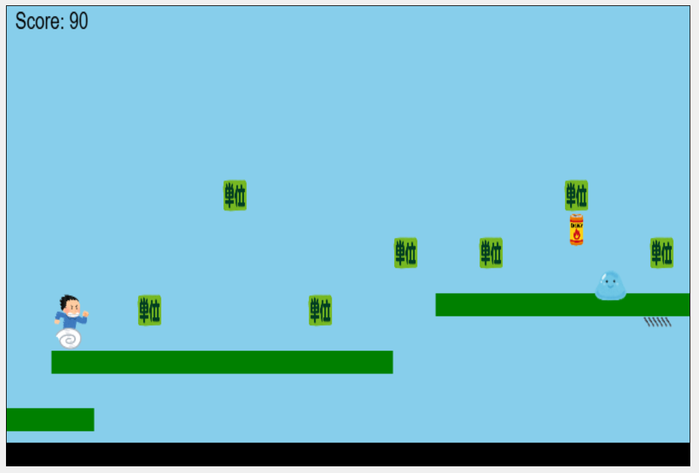

Campus-Run!
概要:
本作品は、研究室のオープンキャンパス向けに制作した横スクロール型のアクションゲームです。
プレイヤーは「単位（アイテム）」を集めながらゴールを目指し、ジャンプや攻撃といったアクション操作を通じてステージを攻略します。
Unityでの制作経験をもとに、HTML/CSS/JavaScriptといったWeb技術のみでのゲーム制作に挑戦し、プログラミング言語の特性や表現力の違いを実践的に学びました。
物理演算が難しい中で、当たり判定・ジャンプ・攻撃処理などのアクション要素をJavaScriptで実装しました。
使用技術: HTML,CSS,JavaScript
開発期間: 2024年6月〜2024年7月
特徴: 横スクロール型の学習モチーフゲーム（キーボードによる操作でキャラクターが移動・ジャンプ・攻撃を行うシンプルなアクション設計。ブラウザ上で動作可能。
画面スクリーンショット:

URL: 作品のリンク